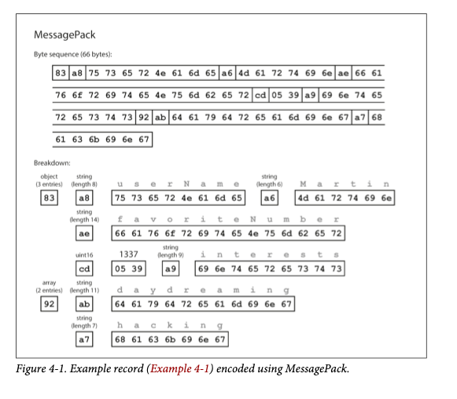
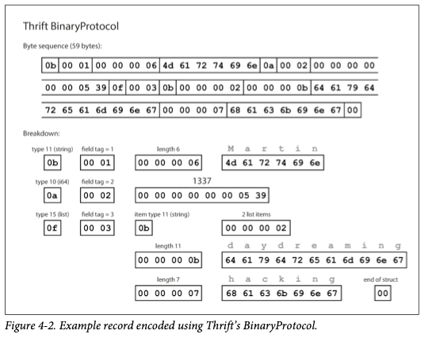
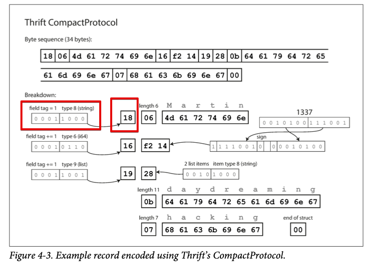
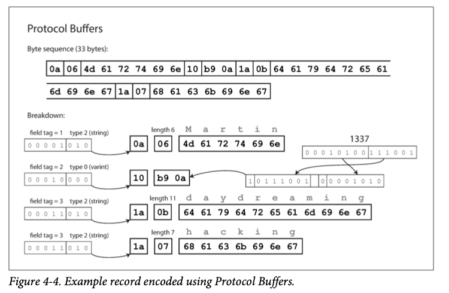
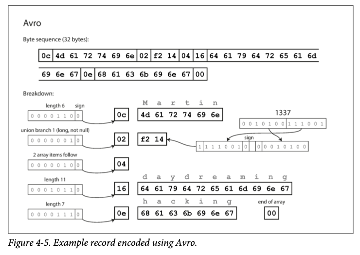
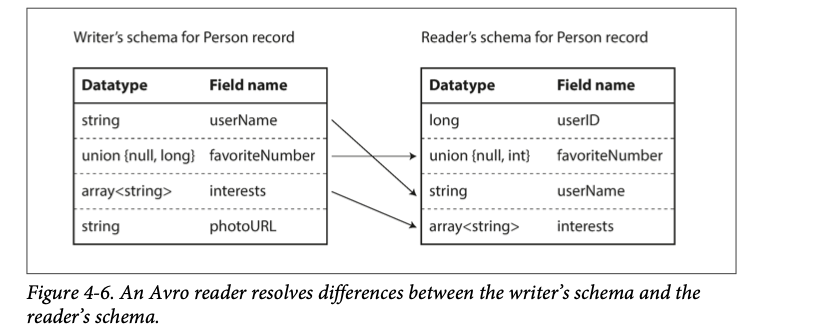
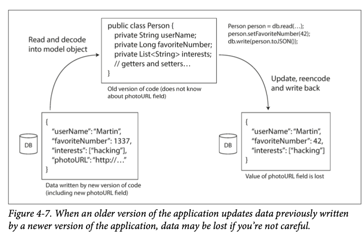

Chapter 4
Encoding and Evolution Application 会因为新的需求而不断改变，这也在Chapter 1#Evolvability Making change easy 里面提到过了，那就是我们需要让我们的 system easy to adapt change
通常情况下，application 功能的变化也意味着对应的 data 发生改变，new fields being added, record type needs to be captured, or exisiting data needs to be presented in a new way
Chapter 2 里面提到的 relational data 通常 assume 所有的 data 会根据已经定义好的 schema 来操作，尽管 schema 可以更新，但一个时间点只能有一个 schema 有效
与之相对的是 schema on read ("schemaless") database. 这种database 可以同时存老的和新的 data formats，这时候如果有 schema change，那么 application 层就需要做出相应的改变，比如你新加了一个 field， 你application就要判断这个 field 是否为空 但当一个 application 变得复杂或者很庞大的时候这种方法通常不行 - With server-side app you may want to perform a rolling upgrade, deploy new version to few nodes at a time to ensure it can run smoothly. - With client-side applications, 你就只能祈祷用户及时安装你的更新了
这也意味着新/老的代码，新/老的 data formats 可能同时存在，所以为了我们的 system 能正常运转，我们需要两个方向的 compactibility - Backward compatibility. Newer code can read data that was written by older code. - Forward compatibility. Older code can read data that was written by newer code.
backward compatibility 通常不难实现，作为更新代码的人，你知道之前的 data format 所以只需要添加相应的判断就可以了 forward compatibility 则需要older code to ignore additions made by a newer version of the code
这一章会看几种不同的 data format encoding (JSON, XML, Protocol Buffers, Thrift, and Avro) 以及它们如何 handle schema changes 并且保证 old/new data and code coexist in the system
然后会讨论这些 formats used for data storage and communication: web services, Representational State Transfer (REST), and remote procedure calls (RPC), as well as message passing system (message queues and actors)
Formats for Encoding Data¶
Programs 通常跟 2种数据打交道 - In memory, data kept in objects, arrays, maps, trees, and these data structure are optimized for CPU access (pointers) - When write data to file or over network, you have to encode it as some kind of self-contained sequence of bytes (e.g. JSON document). Since a pointer wouldn't make sense to any other process, this sequence of bytes looks quite different from the data structures used in memory
所以在这两种 representation 就需要一种转换 (translation), 从 in-memory 到 byte sequence is called encoding (also called serialization or marshalling), 反过来叫做 decoding (parsing, deserialization, unmarshalling)
因为 serialization 这个词在 transaction isolation level 里面还会用到，这本书就用 encoding 这个词了，尽管现实普遍用 serialization 这个词
下面过一下不同的 encoding formats
Language Specific Foramts¶
每个语言都有自己的 encoding 方式
Java has java.io.Serializable [1], Ruby has Marshal [2], Python has pickle [3], and so on. Many third-party libraries also exist, such as Kryo for Java [4].
但他们有很多限制 - Tied to a particular programming language. Not possible to integrate your system to other organizations - Security problem because decoding process need to construct object from bytes and attacker can instantiate arbitrary class when passing byte sequence to your system - Hard to versioning data - Efficiency is bad (Java is famous for bad performance)
JSON, XML, and Binary variants¶
JSON 和 XML 可能是很普遍的 encoding 格式了，widely known, widely supported, and widely disliked. XML 被认为 too verbose. JSON 是因为 build-in support by web browsers CSV 也是另一个 popular format 尽管没那么强大
JSON, XML, CSV 是以文字形式存储的，所以也是 “human readable" format 但他们还是有不少问题 - Ambiguity around encoding of numbers. In XML and CSV, 0. you cannot distinguish between a number and a string that happens to consist of digits (except by referring to an external schema). JSON 能区分，但不区分 integer and float point numbers which has precision issue (JSON 无法辨识大于 \(2^{53}\)的数，The JSON returned by Twitter’s API includes tweet IDs twice, once as a JSON number and once as a decimal string, to work around the fact that the numbers are not correctly parsed by JavaScript applications ) - JSON, XML have good support for Unicode (human readable text) but not binary strings. Binary strings are useful (such as picture) so people get around by encoding the binary data as text using Base64. This works but increases the data size by 33% - There is optional schema support for both XML [11] and JSON [12]. These schema languages are quite powerful, and thus quite complicated to learn and implement. - CSV does not have any schema, so it is up to the application to define the mean‐ ing of each row and column. If an application change adds a new row or column, you have to handle that change manually. CSV is also a quite vague format (what happens if a value contains a comma or a newline character?).
即使有这些不足，JSON, XML, CSV 在很多场景下足够用了
Binary encoding¶
如果只在内部使用 JSON 或者 XML，那么就可以用 binary 的方式(BSON, BJSON, UBJSON, BISON, WBXML, Fast Infoset) 来存储和传输，因为数据越大 binary 节省的空间就越多 书里要用下面这个例子来看 binary encoding
{
"userName": "Martin",
"favoriteNumber": 1337,
"interests": ["daydreaming", "hacking"]
}

- 0x83 用0/1 表示出来是
1000 0011也就是top 4 bit indicate it is an object with 3 fields. (In case you’re wondering what hap‐ pens if an object has more than 15 fields, so that the number of fields doesn’t fit in four bits, it then gets a different type indicator, and the number of fields is encoded in two or four bytes.) 0xa8是1010 1000表示接下来的数据是一个 长度为8(1000) 的 string (1010)- 接下来的 8 bytes 就是 前面提到的 string 的数据，因为已经知道了长度，这里不需要任何 marker 告诉我们string 哪里结束
0xa6表示一个长度为 6 的 string
The binary encoding is 66 bytes long, which is only a little less than the 81 bytes taken by the textual JSON encoding (with whitespace removed). All the binary encodings of JSON are similar in this regard. It’s not clear whether such a small space reduction (and perhaps a speedup in parsing) is worth the loss of human-readability.
下面举的例子是如何把这个 66 bytes 的data 用仅 32 bytes 表示出来
Thrift and Protocol Buffers¶
Apache Thrift [15] and Protocol Buffers (protobuf) [16] are binary encoding libraries that are based on the same principle. Protocol Buffers was originally developed at Google, Thrift was originally developed at Facebook, and both were made open source in 2007–08 [17].
Both Thrift and Protocol Buffers require a schema for any data that is encoded. To encode the data in Example 4-1 in Thrift, you would describe the schema in the Thrift interface definition language (IDL) like this:
struct Person {
1: required string userName,
2: optional i64 favoriteNumber,
3: optional list<string> interest
}
message Person {
required string user_name= 1;
optional int64 favorite_number = 2;
repeated string interests= 3;
}
Application code can call this generated code to encode or decode records of the schema 
跟 figure 4.1 一样，每一个 field 有一个 type annotation (whether it is a string, integer, list, etc) and length indication. Strings are encoded in UTF8 The big difference is that there is no field names. (userName, favoriteNumber, interest) Instead, the encoded data contains field tags, which are numbers (1, 2, 3) Those are numbers in schema definition
Thrift CompactProtocol encoding is semantically equivalent to BinaryProtocol, but it packs field type and tag number into a single byte and by using variable-length integers, (use 2 bytes rather than 8 bytes for number 1337) This way it can pack this message into 34 bytes  ProtoBuf is very similar to Thrift's CompactProtocol 
Field tags and schema evolution¶
Schemas inevitably change over time. How do Thrift and ProtoBuf handle schema changes while keeping backward and forward compactibility? Each field is identified by its tag number and annotated with a datatype. Field tag is important to the meaning of encoded data. You can change the name of a field in the schema, since the encoded data never refers to field names, but you cannot change a field tag, since it will make all existing encoded data invalid.
You can adding new field by giving each new field a new tag number. If old code tries to read data written by new code, including a new field with a tag number it doesn't recognize, it can simply ignore it.
The datatype annotation allows the parser to determine how many bytes it needs to skip. This maintains forward compatibility: old code can read records written by new code
What about backward compatibility? As long as each field has a unique tag number, new code can always read old data, because tag number don't change and thus have same meaning
The only detail is if you add a new field, you cannot make it required since old code cannot write new data field and new code will fail upon parsing
Thus every field you add after the initial deployment of the schema must be optional or have a default value
Removing a field is same, you can only remove a field that is optional and never use the same tag number again
Datatypes and schema evolution¶
What about changing the datatype of a field? (int to string, etc) It is certainly possible but be careful of losing precision or data get truncated. For example, change a 32bit integer to 64 bit integer. New code can easily fill the rest with 0 but old code will use 32bit to try to hold 64 bit value. If the decoded value doesn't fit in 32 bits, it will be truncated.
Protobuf uses repeated instead of array datatype. This has nice effect that it's okay to change an optional to repeated. New code reading old data sees a 0 or 1 elements and old code read new data see only the last element of the list
Thrift has list type which is parameterized with the datatype of the list elements. This doesn't allow evolution from single valued to multivalued datatype but it has advantage of nested lists
Avro¶
Apache Avro is another binary encoding format. Started as a subproject of Hadoop Avro also uses schema and has 2 schema languages 1. Avro IDL intended for human editing 2. Based on JSON that is more easily machine readable
record Person {
string userName;
union {null, long} favoriteNumber = null;
array<string> interests;
}
equivalent JSON
{
"type": "record",
"name": "Person",
"field": [
{"name": "userName", "type": "string"},
{"name": "favoriteNumber", "type": ["null", "long"], "default": null},
{"name": "interests", "type": "type": {"type": "array", "items": "string"}},
]
}
no tag number in Avro's schema, but Avro binary encoding is just 32 bytes  Nothing to identify fields or their datatypes. The encoding simply consists of values concatenated together. Integer is encoded using a variable-length encoding
The parse the binary data, you need to go through the fields in the order they appear in the schema. This means the binary data can only be decoded correctly if the code reading the data is using exact same schema as the code that wrote the data. So how does Avro support schema evolution?
Writer's schema and read's schema¶
Avro encodes the data using whatever version it knows about. This is known as writer's schema
When an application want to decode some data (read from file or database, receive from network etc), it is expecting the data to be in some schema, which is known as reader's schema The key idea with Avro is that writer's schema and reader's schema don't have to be the same. They only need to be compatible.
Avro library resolves the differences by looking at the writer’s schema and the reader’s schema side by side and translating the data from the writer’s schema into the reader’s schema. The Avro specification [20] defines exactly how this resolution works, and it is illustrated in Figure 4-6.
 order doesn't matter because schema resolution matches up by the fields name If writer schema has a field that is not showing in reader's schema, reader's schema will fill it with default value
Schema evolution rules¶
With Avro, forward compatibility means you can have newer version of the schema as writer and older version of the schema as reader. And reverse, backward compatibility means new version of the schema as reader and an old version as writer
To maintain compatibility, you may only add or remove a field that has a default value.
In Avro, if you want to allow a field to be null, you have to use a union type. For example, union { null, long, string } field indicates that field can be a number, or a string, or null. You can only use null as a default value if it is one branch of the union. This is verbose but help prevent some bugs
So Avro doesn't have optional and required markers like ProtoBuf or Thrift
There is an important question that we’ve glossed over so far: how does the reader know the writer’s schema with which a particular piece of data was encoded? We can’t just include the entire schema with every record, because the schema would likely be much bigger than the encoded data, making all the space savings from the binary encoding futile.
Depends on the context. given few examples Large file with lots of records
A common use for Avro—especially in the context of Hadoop—is for storing a large file containing millions of records, all encoded with the same schema. (We will discuss this kind of situation in Chapter 10.) In this case, the writer of that file can just include the writer’s schema once at the beginning of the file. Avro specifies a file format (object container files) to do this.
Database with individually written records
In a database, different records may be written at different points in time using different writer’s schemas—you cannot assume that all the records will have the same schema. The simplest solution is to include a version number at the beginning of every encoded record, and to keep a list of schema versions in your database. A reader can fetch a record, extract the version number, and then fetch the writer’s schema for that version number from the database. Using that writer’s schema, it can decode the rest of the record.
Sending records over a network connection
When two processes are communicating over a bidirectional network connection, they can negotiate the schema version on connection setup and then use that schema for the lifetime of the connection.
Dynamically generated schemas¶
Avro 没有 tag number 是一种优势， 因为他可以更容易实现 dynamically generate schemas。 比如你想把一个 relational database 的内容用binary 格式 dump 到一个 file 里面，Avro 可以根据 relational schema generate Avro schema 然后直接 dump 到一个 Avro object container file 里面， column name match field name in Avro (reference)
与之相对的，thrift and protobuf 则需要手动给一个 field tag. 每一次 database schema changes, 一个 admin 就需要手动更新 mapping from database column names to field tags.
Code generation and dynamically typed languages¶
Thrift and protobuf's code generation is helpful for statically typed languages but not much useful in dynamically typed languages
Avro provides optional code generation for statically typed programming languages, but it can be used just as well without any code generation. If you have an object con‐ tainer file (which embeds the writer’s schema), you can simply open it using the Avro library and look at the data in the same way as you could look at a JSON file. The file is self-describing since it includes all the necessary metadata.
This property is especially useful in conjunction with dynamically typed data pro‐ cessing languages like Apache Pig [26]. In Pig, you can just open some Avro files, start analyzing them, and write derived datasets to output files in Avro format without even thinking about schemas.
The Merits of Schemas¶
ProtoBuf, Thrift, and Avro all use schema for encoding.
这主意也不是新发明的
The ideas on which these encodings are based are by no means new. For example, they have a lot in common with ASN.1, a schema definition language that was first standardized in 1984 [27]. It was used to define various network protocols, and its binary encoding (DER) is still used to encode SSL certificates (X.509), for example [28]. ASN.1 supports schema evolution using tag numbers, similar to Protocol Buffers and Thrift [29] However, it’s also very complex and badly documented, so ASN.1 is probably not a good choice for new applications.
Compare to text based encoding, binary encoding have a number of nice properties: - They can be much more compact than the various “binary JSON” variants, since they can omit field names from the encoded data.
-
The schema is a valuable form of documentation, and because the schema is required for decoding, you can be sure that it is up to date (whereas manually maintained documentation may easily diverge from reality).
-
Keeping a database of schemas allows you to check forward and backward com‐ patibility of schema changes, before anything is deployed.
-
For users of statically typed programming languages, the ability to generate code from the schema is useful, since it enables type checking at compile time.
In summary, schema evolution allows the same kind of flexibility as schemaless/ schema-on-read JSON databases provide
Modes of Dataflow¶
每当你从一个 process 给另一个不 share memory的 process 发数据的时候 (比如写入一个文件或者网络传输)，你就需要 encode data as sequence of bytes, 上面已经讨论了不同的encoding 的方式了
而数据从一个 process flow 到另一个 process 有很多不同的方式，below introduce most common ways of how data flow through one process to another - Via Database - Via service calls - Via async message passing
Dataflow Through Databases¶
In Database, the process that writes to database encodes the data, and process that reads from database decodes it. There may be just one process, in this case you can think of this as sending a message to your future self.
Backward compatibility is clearly necessary here; otherwise your future self won't be able to decode what you previously wrote. 就好像拉丁文一样，如果没有对照书籍，大部分人已经看不懂了
In general, it’s common for several different processes to be accessing a database at the same time.
上面提到的 rolling upgrade 就会让不同的 process access 一个database 并且 newer code maybe write to database where older code reads it
the desirable behavior is usually for the old code to keep the new field intact, even though it couldn’t be interpreted.
老代码对新的 field 不进行改动，而且 encoding 的时候要小心，不然的话有可能丢失数据 
Different values written at different times¶
DB 通常接受任何时间的写入请求，这意味着你数据库里可能有 5 ms 或者 5 年前的数据。如果你deploy new version of your application (server-side), 你几分钟之内可能就把新版本部署了，但是DB 里面的数据还在那里，除非一个5年前的 record 刚好被重写过，不然还是 5年前的 schema。这种现象也叫 data outlives code
Rewriting (migrating) data into a new schema is certainly possible, but it’s an expen‐ sive thing to do on a large dataset, so most databases avoid it if possible. Most rela‐ tional databases allow simple schema changes, such as adding a new column with a null default value, without rewriting existing data. ... Schema evolution thus allows the entire database to appear as if it was encoded with a single schema, even though the underlying storage may contain records encoded with various historical versions of the schema.
重写数据当然可行但是代价太高，schema evolution 则更实用，更现实
LinkedIn’s document database Espresso uses Avro for storage, allowing it to use Avro’s schema evolution rules
原来 linkedin 用 Avro，我说 Martin 怎么这么喜欢 Avro
Archival storage¶
Perhaps you take a snapshot of your database from time to time, say for backup pur‐ poses or for loading into a data warehouse
时不时给 DB 做一次备份，而这一个时间点的备份也意味着当时的 schema 跟着被备份了，所以用最新的 schema 备份更好
Dataflow Through Services: REST and RPC¶
当一个 process 要通过网络传输数据的时候，也有很多种方法可以选择。最常见的是 clients and servers. Server 提供一个 API 然后 client 可以用这个 API 发送请求，这个 server 提供的 API 也叫做 service
web works this way: clients (web browsers) make requests to web servers, making GET requests to download HTML, CSS, JS, images etc. Because browsers, server agree on this standard, you could use any browser to access any website.
Web browser is not only type of client. Mobile device or desktop computer can also make network request to a server. Client side JavaScript application running inside the browser can use XMLHttpRequest to become a HTTP client (this technique is known as Ajax) In this case, server response is typically not HTTP but encoding that is convenient for client side application to process (JSON for example)
A server can itself be a client to another service. Which mean it make request to other service to get some data it needed. This is also called service oriented architecture (SOA) or microservices architecture
service are similar to database: they allow clients to submit and query data. But service expose application specific API rather than query language that can query any data.
This allows inputs and outputs predetermine by the business logic Key goal of service-oriented/microservices architecture is to make application easier to change and maintain
web services¶
When HTTP is used as protocol for talking to a service, it is called web service. This is misleading because web services are used in many other context - A client application running on user's device (mobile, JavaScript web app using Ajax) making requests to a service over HTTP. These request go over public internet - One service make requests to another service own by the same organization. (often in same datacenter) As part of service-oriented architecture (software support those use case is sometimes called middleware) - One service making requests to a service owned by a different organization via internet. (data exchange between different organization backend system) This include public APIs provided by online services, such as credit card processing systems, or OAuth for shared access to user data. REST and SOAP are 2 popular approaches
REST is not a protocol but a design philosophy that builds upon HTTP. It emphasizes simple data formats, using URLs for identifying resources and using HTTP features for cache control, authentication, and content type negotiation.
REST is gaining popularity compared to SOAP and is often associated with microservices. An API designed according to the principles of REST is called RESTful
SOAP is an XML-based protocol for making network API requests. Although it is most commonly used over HTTP, it aims to be independent from HTTP.
The API of SOAP web service is described using an XML based language called the Web Services Description Language (WSDL) WSDL enables code generation so that a client can access a remote service using local classes and method calls
WSDL is not designed to be human-readable, SOAP messages are often too complex to construct manually. So it rely heavily on tool support. For users of programming languages that are not supported SOAP vendors, integration with SOAP is difficult 这也是为什么 JSON 这么流行了吧， browser natively support and easy to construct by hand
RESTful APIs tend to favor simpler approaches, typically involving less code genera‐ tion and automated tooling. A definition format such as OpenAPI, also known as Swagger [40], can be used to describe RESTful APIs and produce documentation.
Problems with remote procedure calls¶
Remote procedure call 有很多局限性，Enterprise Java Bean (EJB), Java's Remote Method Invocation 局限于 Java，Distributed Component Object Model (DCOM) 局限于 microsoft. RPC 诞生于 1970s，目的就是为了通过网络能像在本地一样 call 一个 function，但这个主意从根本上就有问题，主要还是因为网络这个不确定性因素。整个 distributed system 那么复杂就是因为网络的问题…… - local function either succeed for fail. RPC might fail due to network issue, machine being slow - Local function either return result, throws exception, never returns. Network request might time out which you don't know what happened. Chapter 8 会详细讲 - Retry on network request needs to be idempotent (deduplication or result is always the same) Chapter 11 will talk more about this - Network is slower than a local function call. - Local function call just use memory where network call needs to encode data into sequence of bytes - Client and service might be in different language so RPC framework must translate datatypes from one language into another
Current directions for RPC¶
RPC isn't going away. Thrift and Avro come with RPC support. gRPC is an RPC implementation using protobuf
New generation of RPC framework use futures (promises) to encapsulate asynchronous action that may fail. gRPC supports streams where a call consists of not just one request and one response but series of request and response
Some framework provide service discovery which allow client to find out which IP address and port number it can find a particular service.
Binary encoding achieve better performance where RESTful is good for experimentation and debugging
(you can simply make requests to it using a web browser or the command-line tool curl, without any code generation or software installation), it is supported by all main‐ stream programming languages and platforms, and there is a vast ecosystem of tools available (servers, caches, load balancers, proxies, firewalls, monitoring, debugging tools, testing tools, etc.).
public API often use REST API where main focus of RPC is services owned by same organization (typically within same datacenter)
Data encoding and evolution for RPC¶
跟 database 一样， RPC 的 client 和 server 也需要deployed independently. 不过 RPC 相对来说更容易一些，假设 server 都先 update了，client 其次，那么我们只需要在 request 的时候考虑backward compatibility， forward compatibility on response
RPC scheme are inherited from whatever encoding it is used - Thrift, gRPC, Avro can be evolved based on the compatibility rules - SOAP are specified with XML schemas - RESTful API commonly use JSON or URI encoded request parameters for request.
Service compatibility is made harder by the fact that RPC is often used for communi‐ cation across organizational boundaries, so the provider of a service often has no control over its clients and cannot force them to upgrade. Thus, compatibility needs to be maintained for a long time, perhaps indefinitely. If a compatibility-breaking change is required, the service provider often ends up maintaining multiple versions of the service API side by side.
public API 通常是需要多个版本同时支持的, 因为他们没法控制 client 什么时候更新 说这让client 发送请求的时候给出 version number
There is no agreement on how API versioning should work (i.e., how a client can indicate which version of the API it wants to use [48]). For RESTful APIs, common approaches are to use a version number in the URL or in the HTTP Accept header. For services that use API keys to identify a particular client, another option is to store a client’s requested API version on the server and to allow this version selection to be updated through a separate administrative interface
Message-Passing Dataflow¶
我们已经看了信息是如何从一个 process flow 到另一个 process了，其中包括 REST and RPC (network that expect response as soon as possible) 以及 database (one process write encoded data, another process reads it in future)
this section will talk about asynchronous message-passing systems which are somewhere between RPC and databases
They are similar to RPC where client sends a request called message They are similar to database in that message is not sent via direct network connection, but via an intermediary called message broker (also called message queue or message oriented middleware) which stores the message temporarily
Message broker 对于direct RPC 有几个好处 - Act as buffer if recipient is unavailable or overloaded - It can auto redeliver messages to a process that has crashed (prevent message being lost) - Avoids sender needing to know the IP address and port number of the recipient (useful in cloud where VM come and go) - Allows one message send to several clients - logically decouples. the sender from recipient
Message passing communication is usually one-way: sender don't expect receiving a reply from recipient.
This communication pattern is asynchronous: the sender doesn’t wait for the message to be delivered, but simply sends it and then forgets about it.
Message brokers¶
以前 message broker 都是商用软件主导的 TIBCO, IBM etc. 最近则是开源更加流行 RabbitMQ, ActiveMQ, HornetQ, NETS, Kafka
details vary but in general, message brokers are used as follows: 1 process sends a message to a named queue or topic, the broker ensures that the message is delivered to 1 or more consumers or subscribers to that queue or topic. There can be many producers and consumers on same topic
Topic is one-way dataflow. however, consumer itself may publish message to another topic (you can chain them together) or to a reply queue for sender (request/response dataflow similar to RPC)
Distributed actor frameworks¶
The actor model is a programming model for concurrency in a single process. Rather than dealing with threads (which is associated with lock, deadlock, racing problem), logic is encapsulated in actors. Each actor represents 1 client or entity. It may have some local state and it communicates with other actors by sending and receiving async messages. Since actor process 1 message at a time, it doesn't need to worry about threads.
In distributed actor frameworks, this programming model is used to scale an application across multiple nodes. Same mechanism is used, no matter whether the sender and recipient are on the same node or different nodes.
A distributed actor framework essentially integrates a message broker and actor programming model into a single framework.
3 popular distributed actor frameworks handle encoding as follows: - Akka uses Java’s built-in serialization by default, which does not provide forward or backward compatibility. However, you can replace it with something like Protocol Buffers, and thus gain the ability to do rolling upgrades - Orleans by default uses a custom data encoding format that does not support rolling upgrade deployments; to deploy a new version of your application, you need to set up a new cluster, move traffic from the old cluster to the new one, and shut down the old one [51, 52]. Like with Akka, custom serialization plug-ins can be used. - In Erlang OTP it is surprisingly hard to make changes to record schemas (despite the system having many features designed for high availability); rolling upgrades are possible but need to be planned carefully [53]. An experimental new maps datatype (a JSON-like structure, introduced in Erlang R17 in 2014) may make this easier in the future
Summary¶
这一章我们看了将 data structures encoding into bytes(network or disk) 的不同方式。 encoding 的细节不仅影响了他们的效率 (space util) 而且还能影响你 application 的结构以及 deploy 的 options
很多 service 需要 rolling upgrade (new version deployed to few nodes at a time). Rolling upgrade 的 property 就需要我们支持 evolvability - we must assume that different nodes are running the different versions of our application’s code. data flowing around the system provide backward compatibility(new code can read old data) and forward compatibility (old code can read new data) 就是如果你穿越到未来依然能读懂那时候的文字，这就需要文字基本含义不能被删
我们讨论了几种 encoding formats 以及他们的 compatibility properties: - Programming languages - restricted to single language and bad at forward and backward compatibility - Text formats (JSON, XML, CSV) compatibility depends on how you use them and not efficient - Binary formats (Thrift, ProtoBuf, Avro) -> efficient and clearly defined forward and backward compatibility semantics. Downside is data needs to be decoded before it is human readable. 我们还讨论了 data flow - Database - RPC and REST API - Async message passing
有了这些工具，我们的 application 就可以实现 rolling upgrade (evolvability). 快速迭代